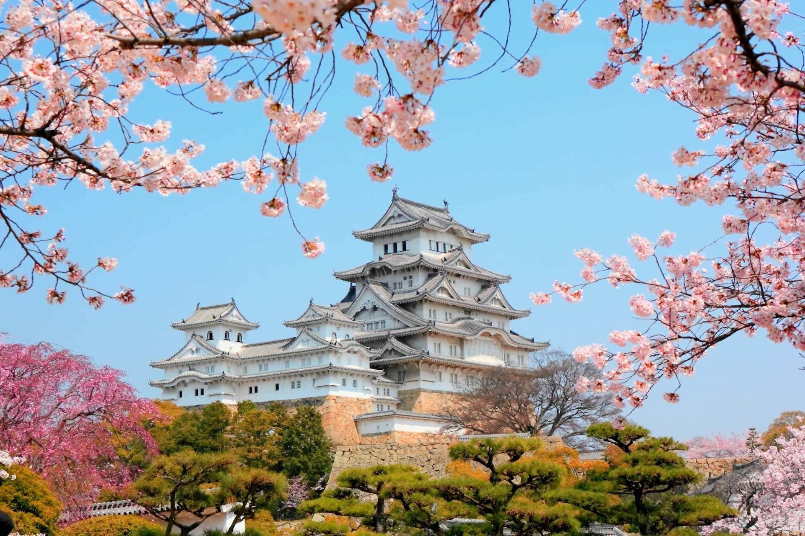

China

China is a land of ancient wonders and modern marvels, offering travelers an unforgettable journey through history and culture. Walk along the Great Wall, explore the Forbidden City in Beijing, cruise the Yangtze River, or admire the landscapes of Guilin. From bustling cities like Shanghai to serene villages and stunning natural sites, China combines tradition, innovation, and breathtaking beauty at every turn.
Japan
Japan is a captivating blend of ancient traditions and cutting-edge modernity. Travelers can experience serene temples in Kyoto, vibrant city life in Tokyo, and the natural beauty of Mount Fuji and cherry blossoms in spring. With its unique culture, world-renowned cuisine, and stunning landscapes, Japan offers unforgettable adventures in every season.
Kazakhastan

Kazakhstan is a land of vast steppes, dramatic mountains, and rich cultural heritage. Travelers can explore modern cities like Astana and Almaty, journey through the stunning landscapes of the Altai and Tian Shan ranges, or experience the unique traditions of nomadic life. With its mix of history, nature, and warm hospitality, Kazakhstan offers an off-the-beaten-path adventure in the heart of Central Asia.